download.file("https://github.com/Shians/BaseR_Intro/raw/master/data/workshop_data.zip", "workshop_data.zip")
unzip("workshop_data.zip", exdir = "data")
unzip("data/Ses3_counts.zip", exdir = "data/counts")2 RNA-seq workshop
In this workshop we will run through the basic steps for analysing a simple RNA-seq experiment using the limma-voom workflow. This includes:
- filtering out lowly expressed genes
- normalisation
- creating a multidimensional scaling (MDS) plot
- creating a design matrix
- fitting gene-wise linear models (with empirical Bayes moderation to more accurately estimate gene-wise variability)
- performing statistical testing for differential expression
The aim of this workshop is to give you experience with a real-world RNA-seq analysis, and making extensive use of an external library. We will not cover the statistics in any depth. Instead, the goal is to understand how to construct data structures required for specific packages and how to use the functions in those packages to perform the analysis.
Much of the materials here are explained in greater detail in the limma user’s guide. You can view this by typing help("limma") and following the links.
2.1 Data files
You can download and unzip the files using the following commands
3 R Packages
The packages required for this workshop can be downloaded by the following commands
if (!requireNamespace("BiocManager", quietly = TRUE))
install.packages("BiocManager")
BiocManager::install("RNAseq123")3.1 Loading in read count data and annotation
The data we are looking at comes from three cell populations (basal, luminal progenitor (LP) and mature luminal (ML)) sorted from the mammary glands of female virgin mice, each profiled in triplicate. These samples have been sequenced using Illumina RNAseq platforms and we will be using the edgeR package to analyse the data.
To use the edgeR package we first need to construct a DGEList object. This object contains 3 key pieces of data:
counts: the main data of this object, a matrix of count values with samples along the columns and features/genes along the rows.samples: a data frame containing annotation for the samples. The rows in this table describe the corresponding column of the counts data.genes: a data frame containing annotation for the genes in the counts matrix. The rows in this table describe the corresponding row in the counts matrix.
NoteData objects
Data objects in general are a way to store related pieces of information together. Often they provide features to maintain the relationships between the pieces of information. For example, in a DGEList object, the counts are stored as a matrix while samples and genes are stored as data frames. When you subset the DGEList object, the rows and columns of the counts matrix are subset along with the corresponding rows of the samples and genes data frames. This prevents errors that can occur if the user tries to manually subset all three pieces of information separately.
# load required packages
library(tidyverse)
library(edgeR)
group <- parse_factor(
c("LP", "ML", "Basal", "Basal", "ML", "LP", "Basal", "ML", "LP"),
levels = c("Basal", "LP", "ML")
)
samplenames <- c(
"10_6_5_11", "9_6_5_11", "purep53", "JMS8-2", "JMS8-3",
"JMS8-4", "JMS8-5", "JMS9-P7c", "JMS9-P8c"
)3.2 A brief detour to factors
Note that when we declared the group variable, we used factors. Factors are a special data type that is used to encode categorical variables. They have multiple useful properties in comparison to regular character vectors: - They allow you to specify the order of the levels. - They are stored as integers but displayed as labels. - They encode all the valid levels of the factor, even if they are not present in the data.
Specifying the order of the levels is useful because it allows you to re-arrange labels when used in plots. In this data we would have the “Basal” group first, followed by “LP” and then “ML”. Using parse_factor() also allows you to check that the values are all valid levels, for example if one of the samples was labelled “Bassal” instead of “Basal”, it would throw an error. You can read the R for Data Science chapter on factors for more information, as well as the forcats package for many useful functions for working with factors.
3.3 Creating the DGEList object
We will create a DGEList object following the RNAseq123 workflow. We use the readDGE() function to read in count data from files, and provide sample information to the readDGE() function and adding in the gene annotation information afterwards.
# vector of file names
files <- dir(path = "data/counts", pattern = "GSM*")
# create DGEList object
dge <- readDGE(
files,
path = "data/counts",
columns = c(1, 3),
group = group,
labels = samplenames
)
# add gene annotation information
gene_anno <- read_tsv("data/Ses3_geneAnnot.tsv")
dge$genes <- gene_anno3.4 Alternative construction of the DGEList object
A more common way to create a DGEList object is to read in the count data as a matrix and then create the DGEList object using the DGEList() function. We can pull apart our existing DGEList object and recreate it using this method. In practice, you will likely be downloading count data as a matrix from a file, and then creating the DGEList object using the DGEList() function, so this is a useful exercise to understand how to construct the data object from its components.
Note
What you can do with data objects is determined by package that the object comes from. You will need to read the package documentation to find out how to access data from the object. Here edgeR informs us that the DGEList has data that can be accessed as if it was a list.
counts <- dge$counts # Usually read in from some counts.txt file
samples <- dge$samples # Usually read in or constructed from sample metadata
genes <- dge$genes # Usually read in from some gene_anno.txt or constructed from rownames of the counts matrix
# create DGEList object
dge <- DGEList(counts = counts, samples = samples, genes = genes)Now we have a data object that can be used for downstream analysis.
3.5 Filtering
The first step of our analysis is to filter out lowly expressed genes. There are two main problems with low abundant genes:
- Technical variation is more problematic for low abundance genes. This variation is thought to be due to two factors; insufficient mixing and low sampling fraction1.
- Insufficient mixing of solutions during library preparation can result in uneven distribution of reads.
- RNA sequencing can be thought of as sampling. Measurement errors will occur simply due to the random nature of the sampling process. This problem affects lowly abundant RNA species more because the relative error for small count values is larger than it would be for more highly abundant RNA species.
- Genes that are very lowly expressed do not produce sufficient information to be useful for biological interpretation. For example, it is very hard to believe the biological significance of genes that have counts ranging from 0 to 3 across samples even if they come up as statistically significant.
Removing these highly variable, lowly expressed genes increases your ‘power’ to detect differentially expressed genes2, where ‘power’ is your ability to detect true positives. In testing for differential expression, a statistical test is conducted for each gene. When a high number of statistical tests are performed, a portion of them will be significant purely due to random chance. A common procedure to control for the number of false positive is to perform ‘multiple testing correction’ on the p-values. This adjusts the p-value in a way that reduces the number of false positives but comes at the cost of reduced power to detect true positives. If we filter out uninteresting, lowly expressed genes, we need to perform fewer statistical tests and reduce the impact that multiple testing adjustment has on detection power.
The edgeR package provides the filterByExpr() function to automate gene filtering. By default, it aims to keep genes with a count of 10 or more, in at least as many samples as the smallest experimental group. In our experiment, there are 3 phenotype groups each with 3 samples. Therefore we retain only genes that have 10 or more counts in 3 or more samples. The actual filtering is done on counts per million, to prevent bias against samples with small library sizes. This complex procedure is the reason why the package provides a function to perform the filtering for you.
The output of this function is a vector of logicals, indicating which genes (rows) should be kept and which filtered.
keep <- filterByExpr(dge)
table(keep)keep
FALSE TRUE
10555 16624 proportions(table(keep))keep
FALSE TRUE
0.3883513 0.6116487 dge <- dge[keep, , keep.lib.sizes = FALSE] # drop the filtered genes and recalculate library sizes
dim(dge$counts)[1] 16624 9We can see that we now have 16624 genes. We started with 27179 genes - meaning that ~40% of genes have been filtered out.
3.6 Library-size normalisation
After filtering, our next step is to normalise the data. Normalisation refers to the process of adjusting the data to reduce or eliminate systematic bias. This allows the data to be meaningfully compared across samples or experimental groups.
There are two main factors that need to be normalised for in RNA-seq:
- Sequencing depth/library size - technically, sequencing a sample to half the depth will give, on average, half the number of reads mapping to each gene3.
- RNA composition - if a large number of genes are unique to, or highly expressed in, only one experimental condition, the sequencing capacity available for the remaining genes in that sample is decreased. For example, if there are only five genes being studied in two experimental groups, if one gene is particularly high in group A, then with limited sequencing depth, that gene will reduce the counts of the remaining four genes. The effect of this is that the remaining four genes appear under-expressed in group A compared to group B when the true amount of gene product is actually equal for these 4 genes3.
Sequencing depth is accounted for by calculating the counts per million (cpm). This metric is calculated by:
- taking the library size (sum of all counts for a sample),
- dividing this by 1,000,000 to get the ‘per million’ scaling factor,
- then dividing all read counts for each gene in that sample by the ‘per million’ scaling factor
RNA composition can be accounted for by using more sophisticated normalisation methodologies. We will use ‘trimmed mean of M-values’ (TMM), which estimates relative RNA levels from RNA-seq data3. Under the assumption that most genes are not differentially expressed, TMM calculates a library size scaling factor for each library (sample). This is done using the following steps:
- calculate the gene expression log fold changes and absolute expression values for pair-wise samples (selecting one sample from the experiment as a reference)
- remove the genes with the highest and lowest fold changes and absolute expression values
- take a weighted mean of the remaining genes (where the weight is the inverse of the approximate asymptotic variances). This gives the normalisation factor for each library (sample)
Subsequent steps in this analysis will use log-cpm values, calculated using the normalisation factors, which scales each library size.
We can calculate the normalisation factors, specifying that we want to use the "TMM" method:
dge <- calcNormFactors(dge, method = "TMM")This function calculates the normalisation factors for each library (sample) and puts this information in the samples data frame. Note that it takes dge (our DGEList object as input) and returns a DGEList object as well.
Let’s take a look at our normalisation factors:
dge$samples group lib.size norm.factors files lib.size.1
10_6_5_11 LP 32857304 0.8943956 GSM1545535_10_6_5_11.txt 32863052
9_6_5_11 ML 35328624 1.0250186 GSM1545536_9_6_5_11.txt 35335491
purep53 Basal 57147943 1.0459005 GSM1545538_purep53.txt 57160817
JMS8-2 Basal 51356800 1.0458455 GSM1545539_JMS8-2.txt 51368625
JMS8-3 ML 75782871 1.0162707 GSM1545540_JMS8-3.txt 75795034
JMS8-4 LP 60506774 0.9217132 GSM1545541_JMS8-4.txt 60517657
JMS8-5 Basal 55073018 0.9961959 GSM1545542_JMS8-5.txt 55086324
JMS9-P7c ML 21305254 1.0861026 GSM1545544_JMS9-P7c.txt 21311068
JMS9-P8c LP 19955335 0.9839203 GSM1545545_JMS9-P8c.txt 19958838
norm.factors.1
10_6_5_11 1
9_6_5_11 1
purep53 1
JMS8-2 1
JMS8-3 1
JMS8-4 1
JMS8-5 1
JMS9-P7c 1
JMS9-P8c 1These normalisation factors are all close to 1 for all samples, suggesting minimal difference in RNA composition between samples.
3.7 Visualising the effect of normalisation
To visualise the effect of TMM normalisation, we can plot the log-counts as a boxplot, and observe the effect of applying the normalisation. To create a boxplot of the log-counts, we can use log(dge$counts + 0.5) to create the log-count matrix. The addition of 0.5 is to avoid taking the log of zero. Then in order to use ggplot2 for plotting, we must convert the matrix to a data frame. We can use the as_tibble(rownames = "gene") function to convert the matrix to a data frame where the rownames are converted to a column called “gene”. We can then use the pivot_longer() function to convert the data frame from wide format to long format, where each row represents a single observation. This is necessary for ggplot2 to plot the data correctly.
as_tibble(log(dge$counts + 0.5), rownames = "gene") %>%
pivot_longer(
where(is.numeric),
names_to = "sample", values_to = "expression"
) %>%
ggplot(aes(x = sample, y = expression)) +
geom_boxplot()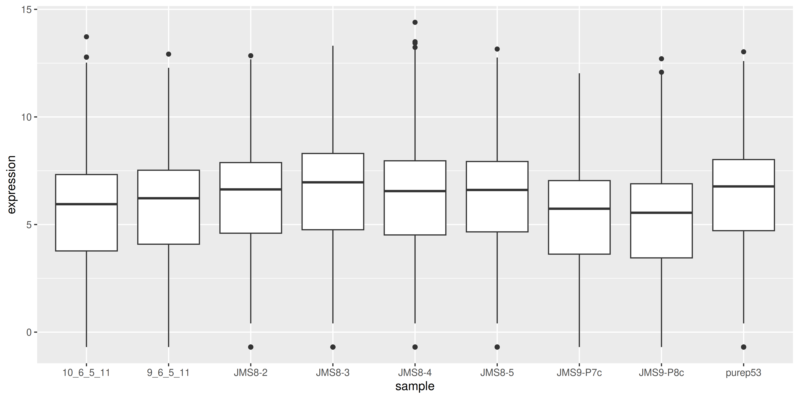
We can compare this to the cpm values which when calculated using the cpm() function, automatically applies normalisation factors if they are present.
as_tibble(cpm(dge, log = TRUE), rownames = "gene") %>%
pivot_longer(
where(is.numeric),
names_to = "sample", values_to = "expression"
) %>%
ggplot(aes(x = sample, y = expression)) +
geom_boxplot()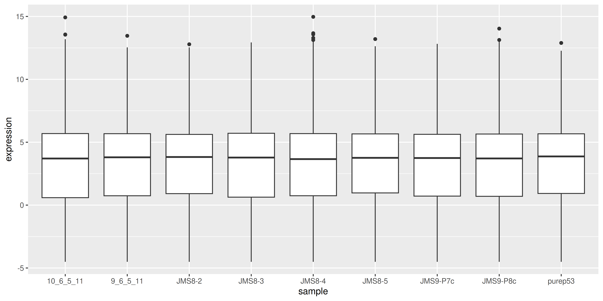
We see that by performing normalisation on our data, the gene expression values of each sample now have similar medians and quantiles. This indicates that the relative expression values of each sample can be more meaningfully compared.
3.8 MDS plots
Before we perform statistical tests, it’s useful to perform some exploratory visual analysis to get an overall idea of how our data is behaving.
MDS is a way to visualise distances between sets of data points (samples in our case). It is a dimensionality reduction technique, similar to principal components analysis (PCA). We treat gene expression in samples as if they were coordinates in a high-dimensional coordinate system, then we can find “distances” between samples as we do between points in space. Then the goal of the algorithm is to find a representation in lower dimensional space such that points that the distance of two objects from each other in high dimensional space is preserved in lower dimensions.
The plotMDS() from limma creates an MDS plot from a DGEList object.
plotMDS(dge)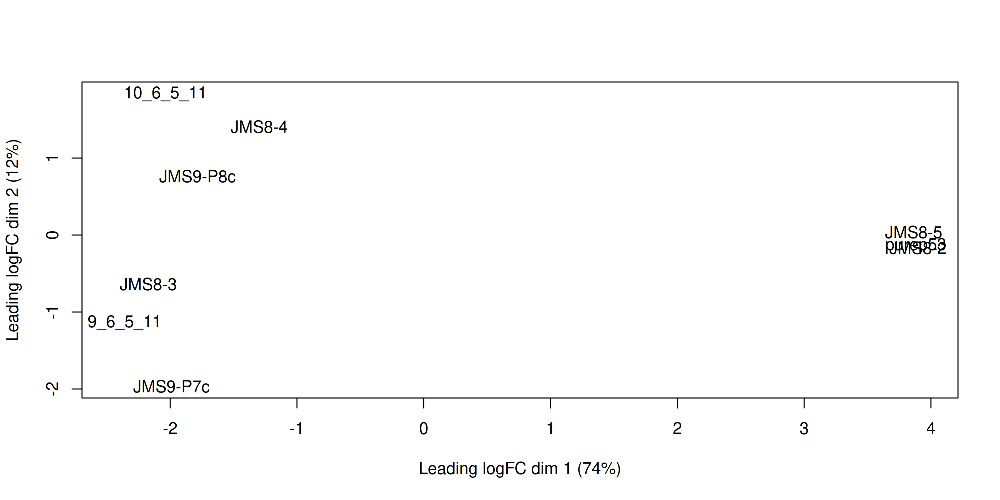
Each point on the plot represents one sample and is ‘labelled’ using the sample name. The distances between each sample in the resulting plot can be interpreted as the typical log2-fold-change between the samples, for the most differentially expressed genes.
We can change the labelling to use the name of the group the sample belongs to instead:
plotMDS(dge, labels = group)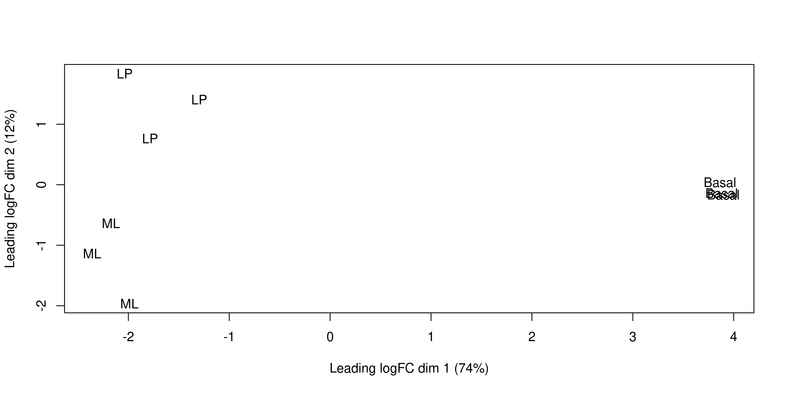
This shows us that the phenotype groups tend to cluster together, meaning that the gene expression profiles are similar for samples within a phenotype group. The ‘Basal’ type samples quite close together while the ‘LP’ (luminal progenitor) and ‘ML’ (mature luminal) type samples are further apart, signifying that their expression profiles are more variable.
# load required packages
library(tidyverse)
library(edgeR)
library(limma)
group <- parse_factor(
c("LP", "ML", "Basal", "Basal", "ML", "LP", "Basal", "ML", "LP"),
levels = c("Basal", "LP", "ML")
)
samplenames <- c(
"10_6_5_11", "9_6_5_11", "purep53", "JMS8-2", "JMS8-3",
"JMS8-4", "JMS8-5", "JMS9-P7c", "JMS9-P8c"
)
# create DGEList object
dge <- readDGE(
dir(path = "data/counts", pattern = "GSM*"),
path = "data/counts",
columns = c(1, 3),
group = group,
labels = samplenames
)
# add gene annotation information
dge$genes <- read_tsv("data/Ses3_geneAnnot.tsv")
# filter lowly expressed genes
keep <- filterByExpr(dge)
dge <- dge[keep, ]
# normalise the data for library size and RNA composition
dge <- calcNormFactors(dge, method = "TMM")3.9 Linear modelling
To identify differentially expressed genes from our normalised gene expression data, we will use the limma package to fit linear models to the genes. A linear model is a broad class of statistical models that fit the value of a response (or dependent) variable as a linear function of one or more explanatory (or independent) variables (also called covariates).
The general form of a linear model looks like this:
\(Y = \beta_{0} + \beta_{1}X_{1} + \beta_{2}X_{2}... + \epsilon\)
This equation is saying that a response variable of interest \(Y\) is equal to a constant (\(\beta_{0}\)) plus the sum of the covariates (\(X_{i}\)) each multiplied by a constant coefficient (\(\beta_{i}\)) and some error term (\(\epsilon\)). The error term is the difference between the observed value and the predicted value of the model and is assumed to have a normal distribution with mean 0 and some variance.
Our experiment is quite simple, since there is only a single covariate, the cell type. The true benefit of using linear models is in its ability to accommodate more complex designs including multiple covariates.
To fit the linear models in the limma-voom framework we need two objects in addition to our data:
- A design matrix, representing the covariates.
- A contrast matrix, representing the specific comparison we wish to make.
3.9.1 Design matrix
The first step to fitting a linear model is to specify a design matrix. The design matrix specifies the values of the covariates for each sample, and is represented as a matrix due to the mathematical convenience.
To generate a design matrix. We use the function model.matrix(), with the expression ~0 + group. This returns a matrix representing the design where there is no intercept term and group is the only covariate. If we omit the 0 then there would be an intercept in the model, and if we included more covariates then more columns would be generated.
design <- model.matrix(~0 + group, data = dge$samples)
design groupBasal groupLP groupML
10_6_5_11 0 1 0
9_6_5_11 0 0 1
purep53 1 0 0
JMS8-2 1 0 0
JMS8-3 0 0 1
JMS8-4 0 1 0
JMS8-5 1 0 0
JMS9-P7c 0 0 1
JMS9-P8c 0 1 0
attr(,"assign")
[1] 1 1 1
attr(,"contrasts")
attr(,"contrasts")$group
[1] "contr.treatment"There are 9 rows, one for each sample. Along the columns are the names of the groups. The values in the cells denote membership of the particular sample for a particular group, as our groups in this case are mutually exclusive, each row contains only a single 1 to denote membership in a single group.
3.9.2 Contrasts
Contrast matrices are companions to design matrices. They are used to specify the comparison of interest. In our case, we have three experimental groups: Basal, LP and ML. So if we are to perform differential expression analysis, we are most likely interested in the differences between only two of the groups at a time. Contrast matrices let use specify which comparison we’d like to make, and are also represented as a matrix just like the design.
A contrast matrix can be made using the makeContrasts() function. Within this function, we specify the name of each specific contrast and the formula for that contrast. For example, the BasalvsLP contrasts compares the difference between the Basal and LP groups. Note that the name of the phenotype groups must be written exactly as they are in the column names of our design matrix (see above).
In addition to the individual contrasts, the function must know about the design of the model. This is passed through the levels argument, which either accepts a matrix with the column names corresponding to levels of your experimental groups, or the levels themselves as a character vector. Here we first simplify the column names of our design matrix to make it easier to read. Then we create the contrast matrix using the makeContrasts() function.
colnames(design) <- c("Basal", "LP", "ML")
contr_matrix <- makeContrasts(
BasalvsLP = "Basal - LP",
BasalvsML = "Basal - ML",
LPvsML = "LP - ML",
levels = design # alternatively 'levels = colnames(design)'
)
contr_matrix Contrasts
Levels BasalvsLP BasalvsML LPvsML
Basal 1 1 0
LP -1 0 1
ML 0 -1 -1There are two things to note about a contrast matrix. First, the sum of the numbers in each column is equal to 0. Second, the way that you set up the equation in the matrix will determine the interpretation of the log-fold-change calculated later, as well as the meaning of up-regulated and down-regulated genes. For example, the contrast Basal - LP will give a positive log-fold-change for genes that are up-regulated in the Basal group compared to the LP group. If we had set up the contrast as LP - Basal, then the opposite would be true, and we would get a negative log-fold-change for genes that are up-regulated in the Basal group compared to the LP group.
3.9.3 Variance modelling with voom
We are now ready to fit our linear models. Limma fits linear models to the data with the assumption that the underlying data is normally distributed. Count data is generally not normally distributed, but log transforming count data gives it a roughly normal distribution sufficient for linear models to work well. To do this, limma transforms the raw count data to log-cpm using library sizes and the normalisation factors we calculated previously.
In addition to the normalisation steps, the limma-voom pipeline uses the voom() function to generate weights for the individual observations based on a modelled mean-variance relationship. The mean-variance relationship is used to estimate the variance of each individual observation of sample-gene expression, and by applying these weights to the linear modelling step, it helps the data better meet the assumptions of the linear model and results in more accurate statistical inferences.
The voom() function takes as arguments, our DGEList object and our design matrix. It also optionally outputs a plot of the mean-variance relationship of our data, called the ‘voom-plot’.
v <- voom(dge, design, plot = TRUE)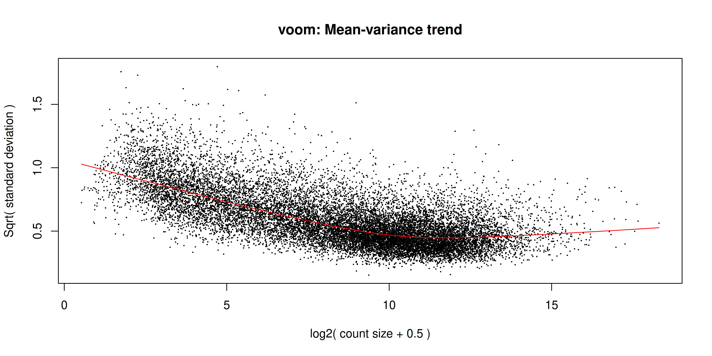
The output of voom() (our variable v) is an EList object which contains the following elements:
genes- a data frame of gene annotation data.targets- data frame of sample data.E- numeric matrix of normalised log-cpm values.weights- numeric matrix of precision weights.design- the design matrix.
The voom plot shows the mean-variance relationship of the data. The x-axis is the average log2 expression of each gene, and the y-axis is the log2 standard deviation of each gene. The idea is that the variance of a gene can be estimated as a function of its main expression, and that this estimate is more accurate than the direct calculation of the variance.
3.9.4 Fitting the linear model
We are now ready to fit our linear model with lmFit(), which calculates coefficients we defined in our design matrix design. The resulting object, vfit is a MArrayLM object. It contains information about our genes (the same data frame as genes from our EList object v above), the design matrix and a number of statistical outputs. Of most interest to us is the coefficients, stored in an element called coefficients. The first rows of this matrix is shown below. Each gene is row and is labelled using the EntrezID. Each column gives coefficients for each of our phenotype groups. These coefficients are weighted averages of the log-cpm of each gene in each group.
vfit <- lmFit(v)
head(vfit$coefficients) Basal LP ML
497097 3.0238407 -4.490714 -3.944753
20671 0.2678024 -2.489068 -2.025190
27395 4.3267906 3.900754 4.365115
18777 5.2066347 4.975762 5.653810
21399 5.2105491 4.901520 4.876117
58175 -1.9300214 3.581004 3.133716We can then use contrasts.fit() to calculate coefficients for each contrast (or ‘comparison’) we specified in our contr_matrix. The output is also an object of the class MArrayLM (also known as an MArrayLM object). When we inspect the coefficients element now, we can see that each column is a contrast that we specified in our contrast matrix.
vfit <- contrasts.fit(vfit, contrasts = contr_matrix)
head(vfit$coefficients) Contrasts
BasalvsLP BasalvsML LPvsML
497097 7.5145551 6.96859344 -0.54596165
20671 2.7568708 2.29299235 -0.46387848
27395 0.4260362 -0.03832424 -0.46436046
18777 0.2308732 -0.44717502 -0.67804818
21399 0.3090295 0.33443212 0.02540261
58175 -5.5110259 -5.06373764 0.44728824With these values we essentially want to know whether or not the difference in values is significantly different from 0. If the difference is not significantly different from 0, then we have failed to establish a difference in the expression of a particularly gene between two groups. If the difference is significantly greater than 0, then we have up-regulation in the first group of the contrast, and if the difference is significantly less than 0, then we have down-regulation in the first group of the contrast.
3.10 Statistical testing
To actually test if the values are significantly different from 0, we use the eBayes() function to compute moderated t-statistics, moderated F-statistics and log-odds of differential expression for each gene, given a fitted linear model. ‘Moderated’ refers to empirical Bayes moderation, which borrows information across genes to obtain more accurate measures of variability for each gene. This also increases our power to detect differentially expressed genes.
efit <- eBayes(vfit)We can now look at the number of differentially expressed genes using the decideTests() function. The output of this function is a matrix where each column is a contrast (comparison of interest) and each row is a gene. The numbers 1, -1 and 0 mean up-regulated, down-regulated or not significantly differentially expressed, respectively. The statistical significance is determined by the adjusted p-value being less than 0.05.
By default, decideTests() adjusts p-values for multiple testing using the Benjamini and Hochberg4 method, but several others are also available.
dt <- decideTests(efit)
dtTestResults matrix
Contrasts
BasalvsLP BasalvsML LPvsML
497097 1 1 0
20671 1 1 0
27395 0 0 0
18777 0 -1 -1
21399 0 1 0
16619 more rows ...To obtain the total number of differentially expressed genes for each comparison, we can add the function summary():
summary(dt) BasalvsLP BasalvsML LPvsML
Down 4501 4850 2701
NotSig 7306 6996 11821
Up 4817 4778 2102The function topTable() can be used to obtain more information on the differentially expressed genes for each contrast. topTable() takes as arguments the MArrayLM object output by eBayes() (efit), the contrast name of interest and the number of top differentially expressed genes to output. Note that the contrast name must be given in quotes and must be exactly as written in the contrast matrix contr_matrix.
It outputs a data frame with the following information:
- Gene details - gene information, from the
geneelement of theMArrayLMobject (efit). logFC- the log2 fold change of the contrast.AveExpr- the average log2 expression of that gene.t- moderated t-statistic.P.Value- p value.adj.P.Val- adjusted p value.B- log-odds that the gene is differentially expressed.
top <- topTable(efit, coef = "BasalvsLP", n = Inf)
head(top) ENTREZID SYMBOL TXCHROM logFC AveExpr t P.Value
12521 12521 Cd82 chr2 -4.095480 7.069340 -35.47147 3.381469e-12
22249 22249 Unc13b chr4 -4.350553 5.662874 -32.38385 8.656449e-12
16324 16324 Inhbb chr1 -4.721420 6.460624 -30.81124 1.446147e-11
14245 14245 Lpin1 chr12 -3.768976 6.293719 -29.95387 1.934041e-11
218518 218518 Marveld2 chr13 -5.215230 4.929711 -30.87474 1.415794e-11
12759 12759 Clu chr14 -5.306850 8.856284 -29.55444 2.220734e-11
adj.P.Val B
12521 4.655035e-08 18.41399
22249 4.655035e-08 17.42593
16324 4.655035e-08 17.06368
14245 4.655035e-08 16.86037
218518 4.655035e-08 16.76898
12759 4.655035e-08 16.702703.11 MA Plot
The MA plot is a plot of log-fold-change (M-values) against log-expression averages (A-values), this is a common plot in RNA sequencing analysis to visualise the result of differential expression tests. It can be created using the plotMA() from the limma package. Creating this plot requires 3 pieces of information:
object = efit: The fitted object containing the log-fold-change and log-expression averagescoef = 1: The column number of the contrast to plot since there are 3 different contrasts fitted within the object.status = dt[, 1]: A vector of numerics denoting whether a gene is up-regulated or down-regulated.
plotMA(efit, coef = 1, status = dt[, "BasalvsLP"])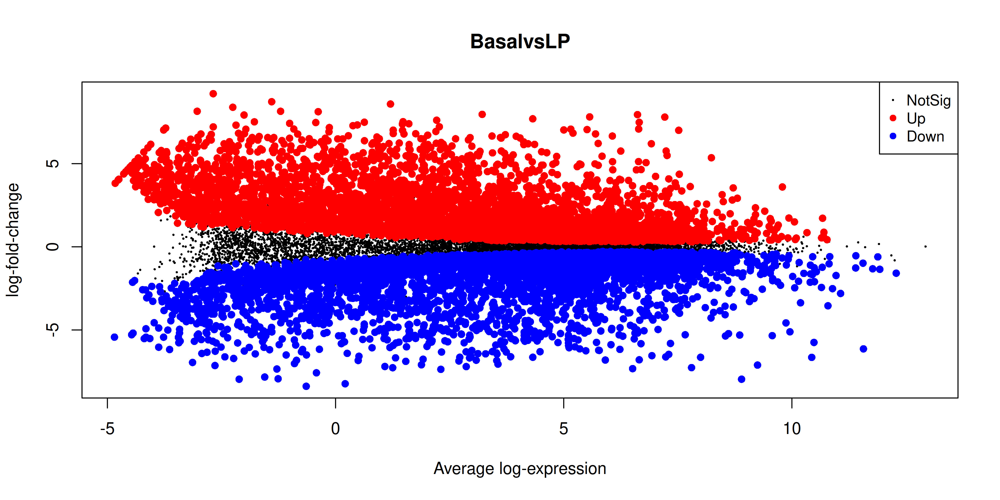
3.12 Heatmap
Finally we can create a heatmap of the differentially expressed genes. The heatmap is a useful way to visualise the expression of the differentially expressed genes across the samples. We can use the pheatmap package to create the heatmap.
First we need to install the package if you haven’t already
install.packages("pheatmap")The data we will use for the heatmap is going to be the log2 cpm expression values of the top differentially expressed genes. We can use the topTable() function to get the top differentially expressed genes for each contrast. We can then use the cpm() function to get the expression values of these genes. We will take the top 50 genes from each contrast and combine them into a single data frame. We will then use extract the expression values for these genes from the full expression matrix. For more interpretable labels, we will use the gene symbols as the row names of the expression matrix.
Note that by default the ENTREZID column is encoded as a numeric value, so to use it to subset our expression matrix we need to convert it to a character vector in order to select the matching IDs rather than trying to select the numerical rows of the data.
top_genes <- bind_rows(
topTable(efit, coef = "BasalvsLP", n = 50),
topTable(efit, coef = "BasalvsML", n = 50),
topTable(efit, coef = "LPvsML", n = 50)
) %>%
select(ENTREZID, SYMBOL, TXCHROM) %>%
distinct()
top_gene_expr <- cpm(dge, log = TRUE)[as.character(top_genes$ENTREZID), ]
rownames(top_gene_expr) <- top_genes$SYMBOLTo create the heatmap we will use the pheatmap() function with the expression matrix. We will add in arguments to provide our own colour scale, to scale the data along the rows with a z-score, adding in sample annotation and clustering the data by rows and columns. We will also add in the option to show the row names and column names, and set the font size of the row names. You can experiment with removing each of these options to see how they affect the heatmap, as well as investigate additional options in the pheatmap() documentation.
library(pheatmap)
sample_anno <- dge$samples %>%
select(group)
heatmap <- pheatmap(
top_gene_expr,
color = colorRampPalette(c("blue", "white", "red"))(100),
scale = "row",
annotation_col = sample_anno,
border_color = NA,
cluster_rows = TRUE,
cluster_cols = TRUE,
show_rownames = TRUE,
show_colnames = TRUE,
fontsize_row = 6
)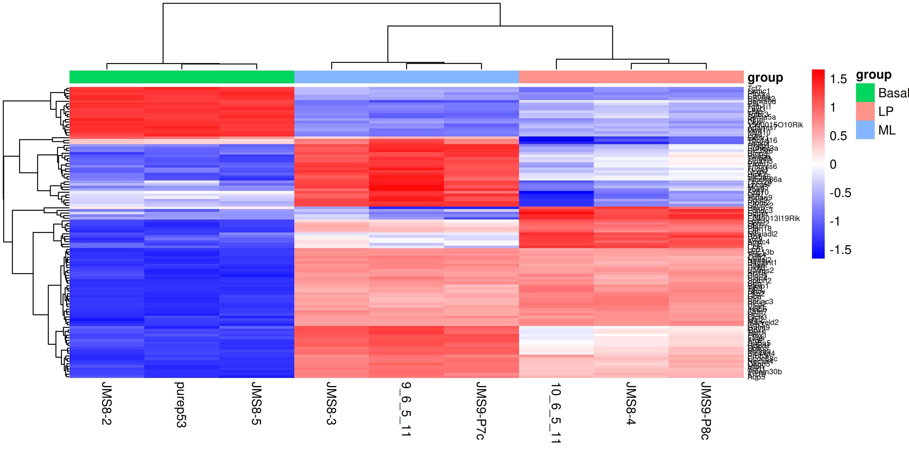
3.13 Saving all the results
Now that we have produced a series of plots and the top genes table, we can save these files to a directory. These figures may form the basis for publication figures, and the results table can partially presented as a result, or the full table can be included as a supplementary file.
dir.create("output")
write_csv(top, "output/top_genes_BasalvsLP.csv")
ggsave("output/heatmap_BasalvsLP.png", heatmap$gtable, height = 10, width = 7)With that we have come to the conclusion of the RNA-seq analysis and this course. You have now learned how to use various tidyverse packages to operate on data and create publication quality figures. You have also learned how to use the limma and edgeR packages to perform differential expression analysis on RNA-seq data. You should now be able to apply these skills to perform analysis on your own data.
4 Extra content
4.1 MDS plot using ggplot2
For more customisability and better consistency with the style of other plots, it’d be nice to be able to draw the MDS plot using ggplot2. In order to do this we would need the MDS coordinates calculated by plotMDS(). Luckily the documentation of plotMDS() shows that it returns multiple computed values.
mds_result <- plotMDS(dge, plot = FALSE)
mds_resultAn object of class MDS
$eigen.values
[1] 6.844400e+01 1.154408e+01 3.790353e+00 2.993850e+00 2.021554e+00
[6] 1.613154e+00 1.202828e+00 1.094069e+00 9.178574e-16
$eigen.vectors
[,1] [,2] [,3] [,4] [,5] [,6]
[1,] -0.2461860 0.54038047 0.12406573 0.677649701 0.20625158 0.07298223
[2,] -0.2851985 -0.33459776 0.67472185 0.006963193 -0.46099176 0.15320224
[3,] 0.4690176 -0.04144927 0.05042145 0.056943894 -0.03695044 -0.03494751
[4,] 0.4711166 -0.04907303 0.05444227 0.161246696 -0.03437239 -0.55064088
[5,] -0.2626089 -0.18747422 0.18503440 -0.355214529 0.66319272 -0.33464911
[6,] -0.1568581 0.41422207 -0.09099097 -0.468668982 0.04618369 0.26490778
[7,] 0.4670465 0.01138551 -0.03116140 -0.161378260 0.07820786 0.56940618
[8,] -0.2405630 -0.57832318 -0.56472337 0.302216393 0.07569095 0.20423228
[9,] -0.2157661 0.22492942 -0.40180995 -0.219758106 -0.53721222 -0.34449321
[,7] [,8] [,9]
[1,] -0.11741059 -0.004180165 -0.3333333
[2,] 0.04465867 -0.048148169 -0.3333333
[3,] 0.03858249 0.810760856 -0.3333333
[4,] 0.33484191 -0.468037911 -0.3333333
[5,] -0.26519096 0.047148082 -0.3333333
[6,] 0.62646421 -0.002840730 -0.3333333
[7,] -0.44131113 -0.344263634 -0.3333333
[8,] 0.19687455 -0.010669966 -0.3333333
[9,] -0.41750915 0.020231637 -0.3333333
$var.explained
[1] 7.383078e-01 1.245264e-01 4.088666e-02 3.229476e-02 2.180657e-02
[6] 1.740115e-02 1.297494e-02 1.180176e-02 9.900959e-18
$dim.plot
[1] 1 2
$distance.matrix.squared
10_6_5_11 9_6_5_11 purep53 JMS8-2 JMS8-3 JMS8-4
10_6_5_11 -18.127115 -5.738908 16.10187 16.03199 -5.792325 -8.3908381
9_6_5_11 -5.738908 -18.115286 17.75976 17.85104 -11.197266 -2.5513265
purep53 16.101870 17.759763 -31.64201 -29.63776 16.733540 10.6453855
JMS8-2 16.031985 17.851044 -29.63776 -32.34822 16.749433 11.0446793
JMS8-3 -5.792325 -11.197266 16.73354 16.74943 -13.580410 -4.1528582
JMS8-4 -8.390838 -2.551327 10.64539 11.04468 -4.152858 -9.8866528
JMS8-5 15.954400 18.363150 -29.18031 -28.91301 16.698195 9.6068498
JMS9-P7c -1.642404 -10.965593 15.03919 15.00383 -9.571823 0.3386078
JMS9-P8c -8.396665 -5.405579 14.18034 14.21802 -5.886486 -6.6538468
JMS8-5 JMS9-P7c JMS9-P8c
10_6_5_11 15.95440 -1.6424036 -8.396665
9_6_5_11 18.36315 -10.9655926 -5.405579
purep53 -29.18031 15.0391919 14.180336
JMS8-2 -28.91301 15.0038272 14.218024
JMS8-3 16.69819 -9.5718226 -5.886486
JMS8-4 9.60685 0.3386078 -6.653847
JMS8-5 -31.82463 15.4924289 13.802921
JMS9-P7c 15.49243 -18.8594921 -4.834745
JMS9-P8c 13.80292 -4.8347448 -11.023959
$top
[1] 500
$gene.selection
[1] "pairwise"
$axislabel
[1] "Leading logFC dim"
$x
[1] -2.036719 -2.359473 3.880224 3.897589 -2.172586 -1.297701 3.863917
[8] -1.990199 -1.785052
$y
[1] 1.83602791 -1.13684869 -0.14083044 -0.16673336 -0.63697323 1.40738482
[7] 0.03868406 -1.96494425 0.76423319We see that there are x and y values in the list returned by the plotMDS() function, we can put these into a table and see if they match up to the positions plotted by the function.
mds_tibble <- tibble(
x = mds_result$x,
y = mds_result$y
)
ggplot(mds_tibble, aes(x = x, y = y)) +
geom_point()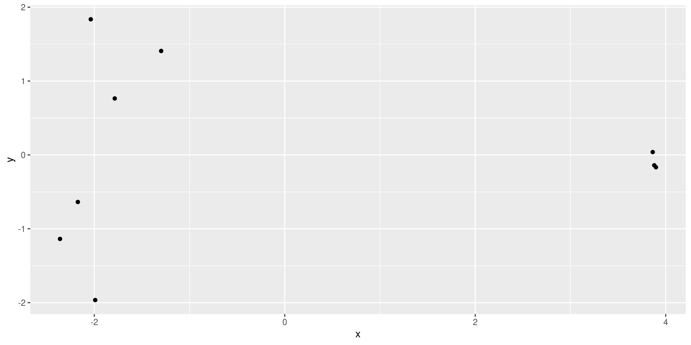
The positions of the points and the range of the scales seem to match, so we want to add in more metadata to help use plot. We can try to recreate the MDS plot using just ggplot2.
mds_tibble <- tibble(
x = mds_result$x,
y = mds_result$y,
sample = colnames(dge),
group = dge$samples$group
)
dim1_var_explained <- round(mds_result$var.explained[1] * 100)
dim2_var_explained <- round(mds_result$var.explained[2] * 100)
ggplot(mds_tibble, aes(x = x, y = y)) +
geom_text(aes(label = group)) +
labs(
x = paste0("Leading logFC dim 1 ", "(", dim1_var_explained, "%)"),
y = paste0("Leading logFC dim 2 ", "(", dim2_var_explained, "%)")
)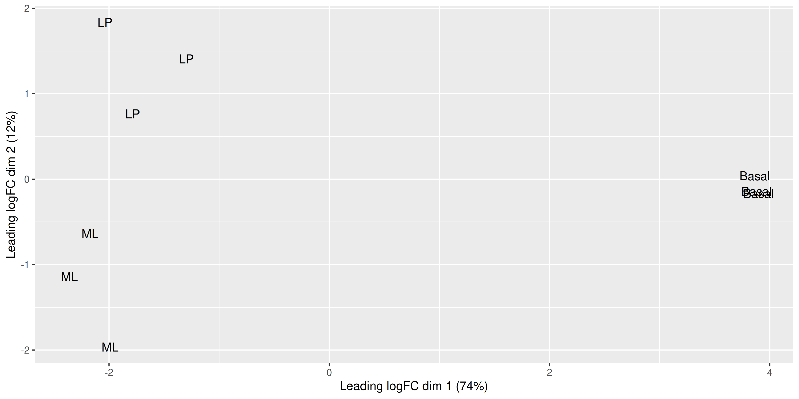
Now that we have our data in a nice tidy format we can use with ggplot, it’s easy to create variations of the plot. For example we can draw points instead of group labels, and use colour to identify the groups.
ggplot(mds_tibble, aes(x = x, y = y, col = group)) +
geom_point() +
labs(
x = paste0("Leading logFC dim 1 ", "(", dim1_var_explained, "%)"),
y = paste0("Leading logFC dim 2 ", "(", dim2_var_explained, "%)")
)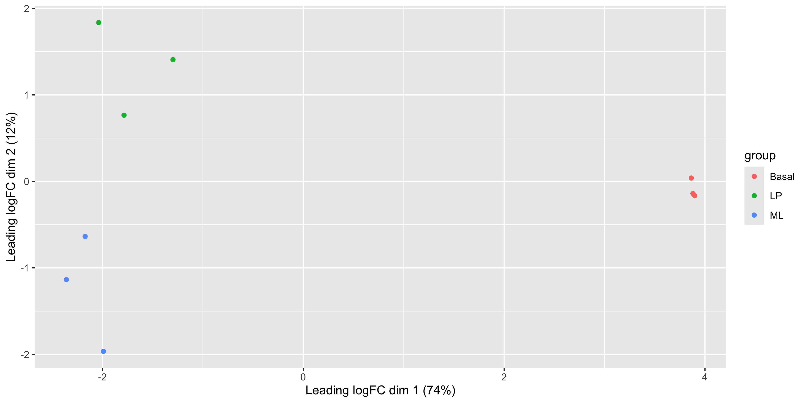
Alternatively we can also use the labels to identify the individual samples while colouring them by their group.
ggplot(mds_tibble, aes(x = x, y = y, col = group)) +
geom_text(aes(label = sample)) +
labs(
x = paste0("Leading logFC dim 1 ", "(", dim1_var_explained, "%)"),
y = paste0("Leading logFC dim 2 ", "(", dim2_var_explained, "%)")
)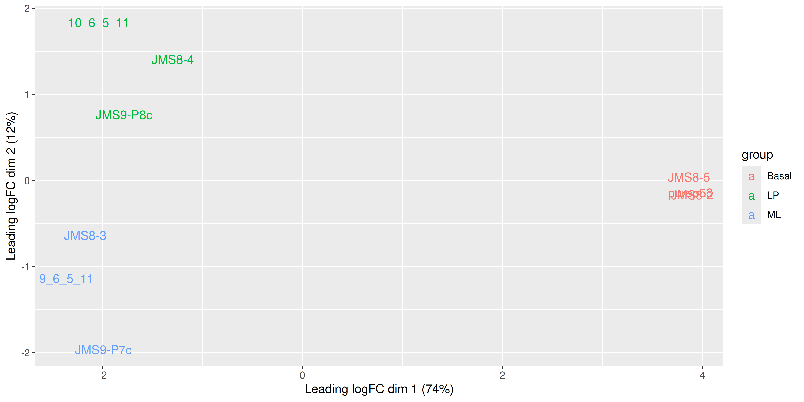
We see that some labels are very hard to read due to the overlapping, so we can use the ggrepel package to fix this. The ggrepel package creates labels that repel each other in order to avoid overlap. It’s a good idea to use it in conjunction with geom_point() in order to keep track of exact coordinates of the data points.
library(ggrepel)
ggplot(mds_tibble, aes(x = x, y = y, col = group)) +
geom_point() +
geom_text_repel(aes(label = sample)) +
labs(
x = paste0("Leading logFC dim 1 ", "(", dim1_var_explained, "%)"),
y = paste0("Leading logFC dim 2 ", "(", dim2_var_explained, "%)")
)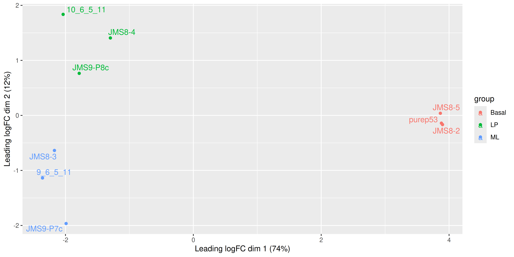
4.2 MA plot with ggplot2
We can try to re-create this plot using ggplot2 to give us more flexibility in plotting. The information we’ll need is the log-fold-change, the average log-expression and the differential expression status of each gene. We can extract this information from the efit and top data frame we created above, as well as gene names for annotation purposes.
ma_plot_data <- tibble(
logFC = efit$coefficients[, "BasalvsLP"],
AvgExpr = efit$Amean,
status = factor(as.numeric(dt[, "BasalvsLP"])),
gene = efit$genes$SYMBOL,
p_value = efit$p.value[, "BasalvsLP"]
)With our tibble prepared, we can use ggplot2 to create the plot as we have done before
ma_plot_data %>%
ggplot(aes(x = AvgExpr, y = logFC, col = status)) +
geom_point()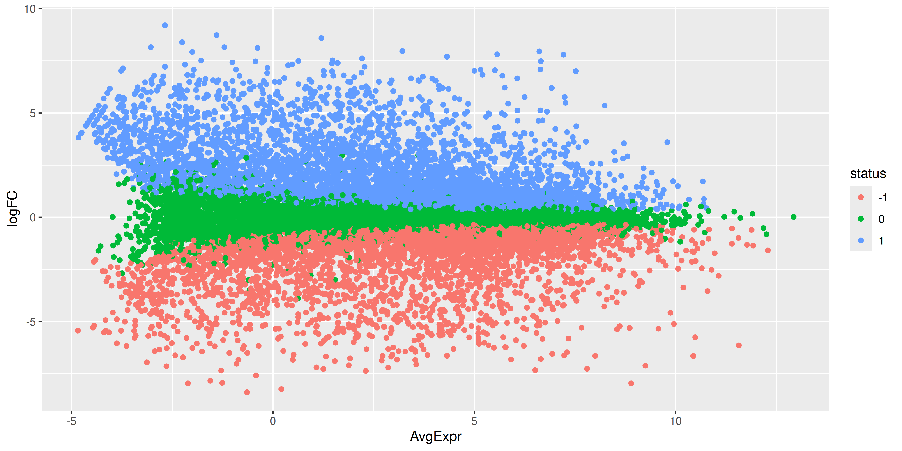
While the coordinates of the points are the same, there is still quite a bit of work to do to make this plot look like the one produced by plotMA(). First we have the fix up the colours of the points. We also have to make it such that the non-significant points are plotted below the other points. To do this we would need to make it so that the non-significant points are plotted first. We can do this by reordering the levels of the status factor so that the non-significant points are plotted first. Labels can also be added using ggrepel for the top 15 most DE genes.
library(ggrepel)
ma_plot_data_fct <- ma_plot_data %>%
mutate(
status = fct_recode(
status,
"Not DE" = "0",
"Down" = "-1",
"Up" = "1"
)
) %>%
mutate(status = fct_relevel(status, "Not DE", "Down", "Up"))
top_de_genes <- ma_plot_data_fct %>%
arrange(p_value) %>%
slice_head(n = 15)
scale_cols <- c(
"Not DE" = "black",
"Down" = "blue",
"Up" = "red"
)
ma_plot <- ma_plot_data_fct %>%
ggplot(aes(x = AvgExpr, y = logFC, col = status)) +
geom_point(data = ma_plot_data_fct %>% filter(status == "Not DE"), size = 0.1) +
geom_point(data = ma_plot_data_fct %>% filter(status != "Not DE"), size = 1) +
geom_label_repel(
data = top_de_genes,
aes(label = gene, col = NULL),
max.overlaps = 20,
show.legend = FALSE
) +
scale_colour_manual(values = scale_cols)
ma_plot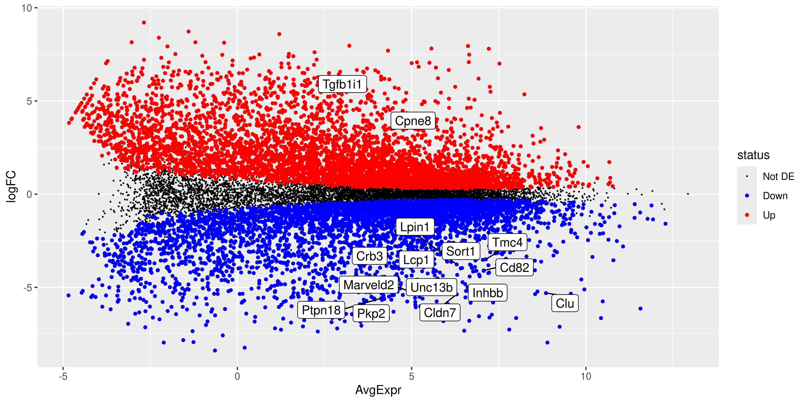
ggsave("output/ma_plot_BasalvsLP.png", ma_plot)Saving 10 x 5 in image4.3 Volcano Plot
Since we have the tibble of the data prepared, we can also choose to create an alternative plot called a volcano plot. Which is also very popular in RNA-seq analysis. The volcano plot is a scatter plot of the negative log10 p-value against the log2 fold-change. This plot is useful for visualising the significance of the differentially expressed genes.
volcano_plot <- ma_plot_data_fct %>%
ggplot(aes(x = logFC, y = -log10(p_value), col = status)) +
geom_point(data = ma_plot_data_fct %>% filter(status == "Not DE"), size = 0.1) +
geom_point(data = ma_plot_data_fct %>% filter(status != "Not DE"), size = 1) +
geom_label_repel(
data = top_de_genes,
aes(label = gene, col = NULL),
max.overlaps = 20,
show.legend = FALSE
) +
scale_colour_manual(values = c("black", "blue", "red"))
volcano_plot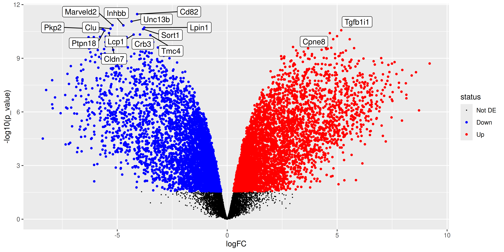
ggsave("output/volcano_plot_BasalvsLP.png", volcano_plot)Saving 10 x 5 in image4.4 References
1.
McIntyre LM, Lopiano KK, Morse AM, Amin V, Oberg AL, Young LJ, et al. RNA-seq: Technical variability and sampling. BMC Genomics [Internet]. 2011 June 6;12(1). Available from: http://dx.doi.org/10.1186/1471-2164-12-293
2.
Bourgon R, Gentleman R, Huber W. Independent filtering increases detection power for high-throughput experiments. Proceedings of the National Academy of Sciences [Internet]. 2010 May 11;107(21):9546–51. Available from: http://dx.doi.org/10.1073/pnas.0914005107
3.
Robinson MD, Oshlack A. A scaling normalization method for differential expression analysis of RNA-seq data. Genome Biology [Internet]. 2010 Mar 2;11(3). Available from: http://dx.doi.org/10.1186/gb-2010-11-3-r25
4.
Benjamini Y, Hochberg Y. Controlling the false discovery rate: A practical and powerful approach to multiple testing. Journal of the Royal Statistical Society Series B: Statistical Methodology [Internet]. 1995 Jan 1;57(1):289–300. Available from: http://dx.doi.org/10.1111/j.2517-6161.1995.tb02031.x